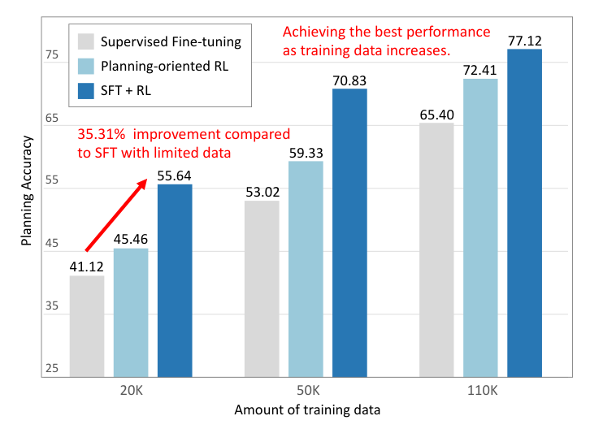
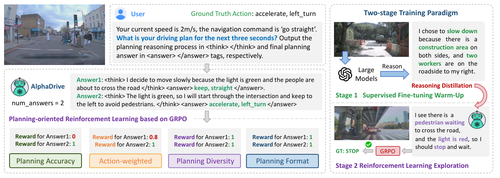
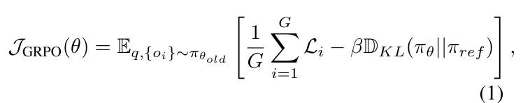
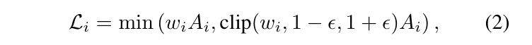
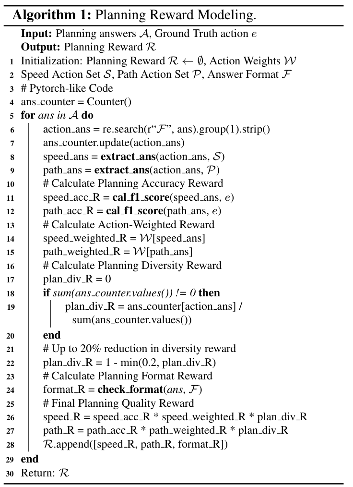
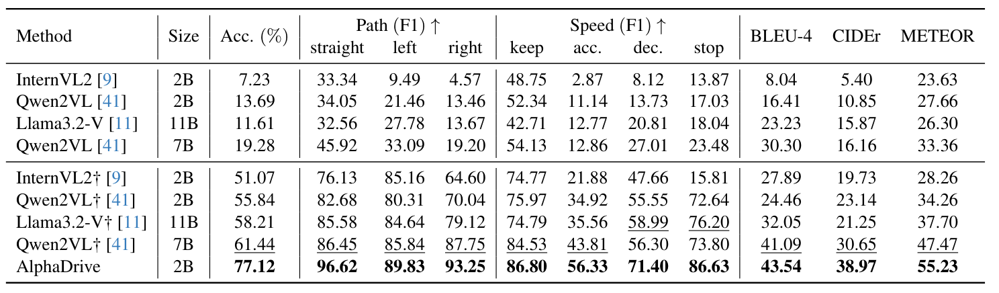
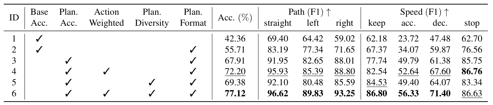
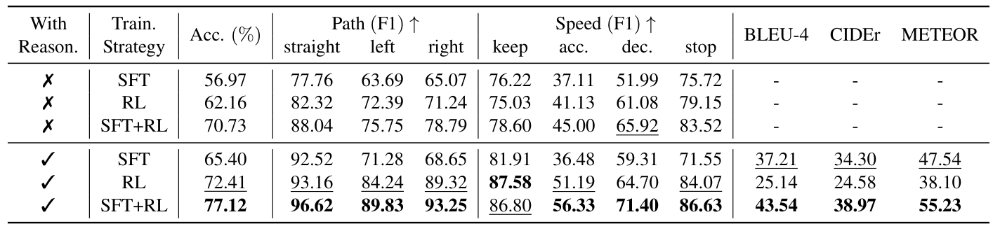
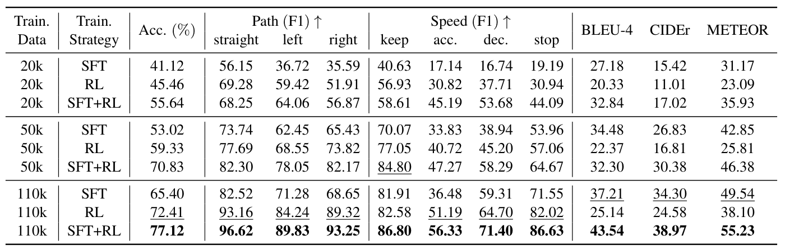
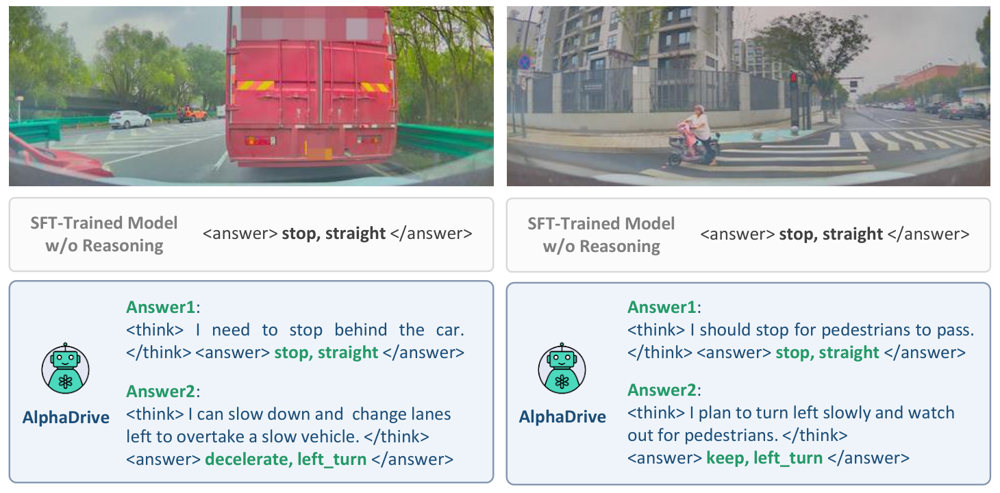

[[HEADER: Abstract]]
摘要
OpenAI o1 and DeepSeek R1 achieve or even surpass human expert-level performance in complex domains like mathematics and science, with reinforcement learning (RL) and reasoning playing a crucial role. In autonomous driving, recent end-to-end models have greatly improved planning performance but still struggle with long-tailed problems due to limited common sense and reasoning abilities.
Some studies integrate vision-language models (VLMs) into autonomous driving, but they typically rely on pre-trained models with simple supervised fine-tuning (SFT) on driving data, without further exploration of training strategies or optimizations specifically tailored for planning. In this paper, we propose AlphaDrive, a RL and reasoning framework for VLMs in autonomous driving.
OpenAI o1和DeepSeek R1在数学和科学等复杂领域中实现了甚至超越了人类专家级的表现，其中强化学习（RL）和推理起到了关键作用。在自动驾驶方面，最近的端到端模型大幅提高了规划性能，但仍难以应对由于常识和推理能力有限而产生的长尾问题。
一些研究将视觉-语言模型（VLMs）集成到自动驾驶中，但它们通常依赖于通过简单的监督微调（SFT）对驾驶数据进行预训练的模型，而不进一步探索专门针对规划的训练策略或优化。在本文中，我们提出了一种名为AlphaDrive的框架，该框架结合了视觉-语言模型和强化学习与推理技术，在自动驾驶中应用这些技术。
AlphaDrive introduces four GRPO-based RL rewards tailored for planning and employs a two-stage planning reasoning training strategy that combines SFT with RL. As a result, AlphaDrive significantly improves both planning performance and training efficiency compared to using only SFT or without reasoning.
Moreover, we are also excited to discover that, following RL training, AlphaDrive exhibits some emergent multimodal planning capabilities, which is critical for improving driving safety and efficiency. To the best of our knowledge, AlphaDrive is the first to integrate GRPO-based RL with planning reasoning into autonomous driving. Code will be released to facilitate future research.
AlphaDrive 引入了四种基于GRPO的RL奖励，专门用于规划，并采用了一种结合SFT与RL的两阶段规划推理训练策略。因此，AlphaDrive 在规划性能和训练效率方面显著优于仅使用SFT或不进行推理的情况。
此外，我们还欣喜地发现，在经过RL训练后，AlphaDrive 展现出一些新兴的多模态规划能力，这对提高驾驶安全性和效率至关重要。据我们所知，AlphaDrive 是首个将基于GRPO的RL与规划推理集成到自动驾驶中的系统。代码将在未来的研究中予以发布，以促进相关研究的发展。
[[HEADER: 1. Introduction]]
1. 引言
Resource Figure_1
Figure 1. Our planning-oriented RL and two-stage training strat- egy significantly boost planning accuracy. With just 20k samples, it outperforms SFT by 35.31%, showing strong performance even with limited data. As data increase, AlphaDrive consistently leads in planning performance.
图 1. 我们的面向规划的 RL 和两阶段训练策略显著提升了规划准确性。仅使用 20k 样本，它就比 SFT 高出 35.31% 的性能，在数据增加的情况下，AlphaDrive 在规划性能上始终领先。
Autonomous driving has witnessed rapid advances in recent years, with end-to-end autonomous driving emerging as one of the most representative models [8, 16, 17, 22, 29]. They take sensor data as input and leverage learnable neural networks to plan the vehicle’s future trajectory. Benefiting from large-scale driving demonstrations, end-to-end models continuously improving their planning capabilities by
expanding training data and increasing model parameters. However, due to their black-box nature and lack of common sense, end-to-end models still face significant challenges when handling complex and long-tail driving scenarios. For instance, consider a situation where the vehicle ahead is carrying traffic cones while driving.
自主驾驶在近年来取得了迅速的进步，端到端（end-to-end）自主驾驶模式作为最具代表性的模型之一，得到了广泛的研究和发展[8, 16, 17, 22, 29]。这些模型将传感器数据作为输入，并利用可学习的神经网络来规划车辆的未来轨迹。得益于大规模的驾驶演示，端到端模型通过扩展训练数据和增加模型参数不断改进其规划能力。然而，由于它们具有黑盒性质且缺乏常识，端到端模型在处理复杂和长尾（long-tail）驾驶场景时仍面临重大挑战。例如，在前方车辆正在运送交通锥筒并行驶的情况下。
An end-to-end model may fail to comprehend the relationship between the leading vehicle and the traffic cones, mistakenly assuming that the road ahead is under construction and thus impassable, leading to an incorrect decision to brake. Therefore, relying solely on end-to-end models to achieve high-level autonomous driving remains challenging. With the success of GPT [6], large language models (LLMs) show remarkable comprehension and reasoning abilities [38, 48].
Furthermore, their capabilities have evolved from unimodal text understanding to multimodal vision-language processing. [3, 10, 24]. The commonsense and reasoning abilities of VLMs hold great potential to mitigate the limitations of end-to-end models. Recently, OpenAI o1 [25], which incorporates reasoning techniques, achieves performance comparable to or even surpassing that of human experts in fields such as programming.
端到端模型可能无法理解前车与交通锥之间的关系，错误地假设前方道路正在施工且不可通行，从而导致错误的刹车决策。因此，仅依赖端到端模型实现高级自动驾驶仍然具有挑战性。随着GPT [6]的成功，大型语言模型（LLMs）展示了显著的理解和推理能力 [38, 48]。
此外，它们的能力已经从单一模态文本理解发展到了多模态视觉-语言处理 [3, 10, 24]。VLMs的常识和推理能力具有巨大的潜力，可以缓解端到端模型的局限性。最近，OpenAI o1 [25] 结合了推理技术，在编程等领域实现了与甚至超越人类专家的性能。
Additionally, DeepSeek R1 [14], which leverages reinforcement learning, not only demonstrates “emergent abilities”and achieves top-tier performance but also requires significantly lower training costs compared to other models. These advances underscore the immense potential of reasoning techniques and RL in the development of large models. Existing research on applying VLMs to autonomous driving can be broadly categorized into two directions.
The first focuses on leveraging VLMs for the understanding of driving scenes [34, 49]. The second explores the use of VLMs for planning, where some studies treat VLMs as end-to-end systems that process driving images and other inputs to directly predict trajectories [7, 47]. However, unlike end-to-end models which are specifically designed for trajectory planning, VLMs operate in a language space and are not inherently suited for precise numerical predictions [12, 15].
此外，DeepSeek R1 [14] 利用强化学习不仅展示了“涌现能力”并取得了顶级性能，而且与其它模型相比所需的训练成本显著降低。这些进步突显了推理技术和强化学习在大型模型开发中的巨大潜力。现有将视觉语言模型（VLMs）应用于自动驾驶的研究可以大致分为两个方向。
第一个方向侧重于利用 VLMs 理解驾驶场景 [34, 49]。第二个方向则探索使用 VLMs 进行规划，其中一些研究将 VLMs 视作端到端系统，处理驾驶图像和其他输入以直接预测轨迹 [7, 47]。然而，与专门设计用于路径规划的端到端模型不同，VLMs 在语言空间中运行，并不天生适合进行精确的数值预测 [12, 15]。
Consequently, directly employing VLMs for trajectory planning may result in suboptimal performance and even pose safety risks. Some studies leverage VLMs for high-level planning by formulating the ego vehicle’s future actions in natural language, such as “slow down and turn right” [18]. Although this approach circumvents the aforementioned drawbacks, existing works still lack further exploration of training methodologies.
Most of them primarily rely on SFT, overlooking the impact of different training strategies on planning performance and the associated training costs. In this paper, we explore the following question: How can RL and reasoning — which achieves remarkable success in general large models — be applied to autonomous driving, particularly in planning, to enhance the performance of VLMs in autonomous driving while reducing training costs?
因此，直接使用VLM进行轨迹规划可能会导致性能不佳甚至存在安全风险。一些研究通过将ego车辆的未来动作用自然语言（如“减速并右转”[[LINK: Eq. 1|Eq. 1]]）来制定高级计划，从而绕过了上述问题。尽管这种方法规避了前述缺点，但现有工作仍然缺乏对不同训练策略及其对规划性能和相关训练成本影响的进一步探索。
大多数研究主要依赖于SFT，忽视了不同训练策略对规划性能及相应训练成本的影响。在本文中，我们探讨了以下问题：如何将RL（强化学习）和推理——这些方法已经在通用大型模型中取得了显著成功——应用于自动驾驶领域，特别是在规划方面，以提高VLMs在自动驾驶中的性能并降低训练成本？
Through preliminary experiments, we find that directly applying existing RL and reasoning techniques to planning results in suboptimal performance. We attribute this to three main factors. First, the reward design in RL for general tasks is not well-suited for planning. For example, in visual object counting, the reward can be simply determined based on whether the model predicts the correct answer.
However, in autonomous driving, while high-level planning can be formulated as a multi-class classification problem, the varying significance of different driving behaviors makes it inappropriate to assign equal weights to all actions. Second, unlike mathematical or counting, the solution of planning are usually not unique. For instance, on an open, straight road, one may choose to maintain a constant speed or accelerate, both of which are valid decisions.
通过初步实验，我们发现直接将现有的强化学习（RL）和推理技术应用于规划结果会导致性能不佳。我们认为这主要归因于三个因素。首先，在一般任务中，RL中的奖励设计并不适合规划。例如，在视觉物体计数任务中，奖励可以根据模型预测的正确答案来简单地确定。
然而，在自动驾驶中，虽然高层次的规划可以被形式化为一个多类分类问题，但由于不同驾驶行为的重要性各异，将所有动作赋予相同权重是不合适的。其次，与数学或计数不同，规划的解决方案通常不是唯一的。例如，在一条开放且笔直的路上，可以选择保持恒定速度或加速，这两种决策都是合理的。
Therefore, rigidly assessing whether the model’s planning output exactly matches the ground truth in the training data may not be the optimal approach. Finally, while domains such as mathematics have abundant reasoning data, including textbooks and solution manuals that can be easily utilized, autonomous driving lacks readily available datasets that capture the reasoning process. Collecting such data is highly costly and requires extensive manual annotation.
As a result, directly applying existing reasoning techniques to planning remains challenging. To address the aforementioned challenges, this paper introduces AlphaDrive, a VLM-based reinforcement learning and reasoning framework specifically designed for autonomous driving planning. In particular, AlphaDrive employs a RL strategy based on Group Relative Policy Optimization (GRPO) [33].
因此，严格评估模型的规划输出是否与训练数据中的真实值完全一致可能并不是最优的方法。最后，尽管诸如数学这样的领域拥有丰富的推理数据，包括易于利用的教科书和解题手册，但自动驾驶缺乏能够捕捉推理过程的现成数据集。收集此类数据成本高昂，并且需要大量的手动标注。
因此，直接将现有的推理技术应用于规划仍然具有挑战性。为应对上述挑战，本文引入了AlphaDrive，这是一种基于VLM（视觉语言模型）的强化学习和推理框架，专门设计用于自动驾驶规划。特别是，AlphaDrive 使用了一种基于组相对策略优化（GRPO）[33] 的RL策略。
Compared to Proximal Policy Optimization (PPO) [32] and Direct Preference Optimization (DPO) [31], GRPO exhibits better training stability and performance. Furthermore, the group relative optimization strategy in GRPO is well-suited for planning, as planning often involves multiple valid solutions, making relative optimization across multiple solutions a natural fit.
Our experiments show that AlphaDrive exhibits some emergent multimodal planning capabilities, which we think can be attributed to the use of GRPO. AlphaDrive introduces four GRPO rewards tailored for planning. The first is the planning accuracy reward, which evaluates the consistency between the model’s planning actions and the ground truth actions. The second is the actionweighted reward, which assigns different weights to various actions based on their importance to safety.
与Proximal Policy Optimization (PPO) [32]和Direct Preference Optimization (DPO) [31]相比，GRPO在训练稳定性和性能方面表现更优。此外，GRPO中的群体相对优化策略非常适合用于规划，因为规划通常涉及多个有效的解决方案，使得在多个方案之间进行相对优化成为自然的选择。
我们的实验表明，AlphaDrive展现了一些新兴的多模态规划能力，我们认为这可能是由于使用了GRPO。AlphaDrive引入了四种针对规划定制的GRPO奖励。首先是规划准确性奖励，它评估模型的规划动作与真实动作的一致性。其次是动作加权奖励，根据各种动作对安全的重要性为其分配不同的权重。
For instance, actions such as braking and steering are critical for safety, so weighting them accordingly helps the model achieve better performance in planning key actions. The third is the planning diversity reward, which encourages the model to generate multiple diverse solutions. This prevents mode collapse and enhances overall planning performance. The last one is the planning format reward, where we define a specific output format and encourage the model to follow it.
This ensures more structured outputs and contributes to more stable training. In addition to RL, we propose a planning reasoning technique. Our approach employs a two-stage training strategy based on knowledge distillation, integrating SFT and RL. In the first stage, we leverage a large model, such as GPT-4o, to generate a small yet high-quality dataset containing planning reasoning processes derived from real driving actions.
例如，制动和转向等动作对于安全至关重要，因此对这些动作进行相应的加权有助于模型在规划关键动作时取得更好的性能。第三种是规划多样性奖励，它鼓励模型生成多种多样的解决方案。这可以防止模式崩溃并提高整体的规划表现。最后一种是规划格式奖励，在这种奖励机制下，我们定义了一个特定的输出格式，并鼓励模型遵循这一格式。
这样可以确保输出更加结构化，并有助于更稳定的训练。除了强化学习（RL），我们还提出了一种规划推理技术。我们的方法采用基于知识蒸馏的两阶段训练策略，结合了序列填充训练（SFT）和强化学习（RL）。在第一阶段，我们利用大型模型（如GPT-4o）生成一个包含从实际驾驶行为中提取出的规划推理过程的小型高质量数据集。
This dataset is then used to fine-tune our model via SFT, effectively distilling knowledge from the large model. In the second stage, we further refine the model using RL. Introducing the SFT stage as a warm-up step effectively mitigates hallucinations and instability commonly observed in the early stages of reinforcement learning, while also enhancing planning performance.
Our contributions are summarized as follows: • We propose AlphaDrive, a VLM tailored for high-level planning in autonomous driving. To the best of our knowledge, AlphaDrive is the first to integrate GRPObased RL with planning reasoning to autonomous driving, significantly boosting both performance and training efficiency. • AlphaDrive introduces four GRPO rewards for planning: planning accuracy reward, action-weighted reward, planning diversity reward, and planning format reward.
该数据集随后用于通过SFT对我们的模型进行微调，有效地从大型模型中提炼知识。在第二阶段，我们进一步使用RL细化模型。引入SFT阶段作为预热步骤，有效缓解了强化学习早期阶段常见的幻觉和不稳定性问题，并且也提升了规划性能。
我们的贡献总结如下：
• 我们提出AlphaDrive，这是一种针对自主驾驶高级规划的VLM（视觉语言模型）。据我们所知，AlphaDrive是第一个将基于GRPO的RL与规划推理结合应用于自主驾驶的方法，显著提高了性能和训练效率。
• AlphaDrive引入了四种用于规划的GRPO奖励：规划准确性奖励、动作加权奖励、规划多样性奖励以及规划格式奖励。
These optimized rewards make GRPO more suitable for autonomous driving. • We propose a two-stage reasoning training strategy based on knowledge distillation, integrating SFT and RL. Our approach achieves better planning performance compared to training with RL alone or without reasoning. • Experiments on a large-scale driving dataset validate the superiority of AlphaDrive.
Compared to the SFT-trained model, AlphaDrive significantly improves the planning accuracy by 25.52% and, with only 20% of the training data, outperforms the SFT-trained model by 35.31%. We are also excited to discover that, following RL training, AlphaDrive exhibits some emergent multimodal planning capabilities, which is promising for improving driving safety and efficiency.
这些优化的奖励使GRPO更加适合自动驾驶。• 我们提出了一种基于知识蒸馏的知识推理训练策略，结合了SFT和RL。我们的方法在仅使用RL进行训练或不进行推理的情况下表现更好。• 在大规模驾驶数据集上的实验验证了AlphaDrive的优越性。
与SFT训练的模型相比，AlphaDrive在规划准确性上提高了25.52%，并且仅使用20%的训练数据就比SFT训练的模型高出35.31%。我们还发现，在RL训练之后，AlphaDrive表现出一些新兴的多模态规划能力，这对提高驾驶安全性和效率是很有前景的。
[[HEADER: 2. Related Work]]
2. 相关工作
Resource Figure_2
Figure 2. Overall training framework of AlphaDrive. AlphaDrive is trained using GRPO-based RL, and we design four planning rewards to help the model understand and learn planning. Besides, we propose a two-stage training paradigm, the first stage uses SFT to distill the planning reasoning process from a large model and serves as a warm-up, while the second stage employs RL to explore planning.
图 2. AlphaDrive 的整体训练框架。AlphaDrive 使用基于 GRPO 的 RL 进行训练，并设计了四种规划奖励来帮助模型理解和学习规划。此外，我们提出了两阶段训练范式：第一阶段使用 SFT 提取出自大模型的规划推理过程并作为预热，第二阶段则利用 RL 探索规划。
Vision Language Models. Since the release of GPT [1, 6], the capabilities of large models have gradually expanded from single modality to multi-modalities. Large vision language models [1, 3, 24, 38] now demonstrate superior abilities in visual understanding and reasoning. Early works attempt to integrate visual models with large language models (LLMs), Flamingo [2] uses a visual encoder to process visual signals and adds attention layers in the LLM decoder to interact with the visual features.
BLIP [20, 21] introduces the Q-Former architecture and cross-modal contrastive learning tasks to bridge the vision encoder with LLMs. LLaVA [23, 24] propose using vanilla MLP as the connector between the visual encoder and LLMs, which achieves impressive visual understanding capabilities with relatively limited data.
视觉语言模型。自GPT[1, 6]发布以来，大型模型的能力逐渐从单一模态扩展到多模态。现有的大型视觉语言模型[1, 3, 24, 38]现在在视觉理解和推理方面表现出色。早期的工作尝试将视觉模型与大规模语言模型（LLMs）进行整合，Flamingo [2] 使用视觉编码器处理视觉信号，并在LLM解码器中添加注意力层以与视觉特征交互。
BLIP [20, 21] 引入了Q-Former架构和跨模态对比学习任务，将视觉编码器与LLMs连接起来。LLaVA [23, 24] 提出使用标准的MLP作为视觉编码器与LLMs之间的连接器，在相对有限的数据下实现了出色的视觉理解能力。
The QwenVL [3, 41] series continuously improve the visual module, offering better support for high-resolution and dynamic resolution images, while also demonstrate excellent performance in multilingual tasks and spatial perception.
Reinforcement Learning and Reasoning. Autoregressive learning [39] is currently the mainstream pre-training strategy for LLMs. Besides, RL and reasoning techniques further enhance the capabilities of large models [26, 31– 33, 43]. For instance, GPT [1] employs RL with Human Feedback (RLHF) [26], which incorporates human feedback into the training process.
By integrating human intentions and behavioral preferences, RLHF enables LLMs to generate outputs that align more closely with human habits and preferences. Direct Preference Optimization (DPO) [31] enhances the model’s performance by directly optimizing preference feedback.
QwenVL [3, 41] 系列不断改进视觉模块，为高分辨率和动态分辨率图像提供更好的支持，并且在多语言任务和空间感知方面表现出色。
强化学习与推理。自回归学习 [39] 目前是大型语言模型（LLMs）预训练的主要策略。此外，强化学习和推理技术进一步增强了大模型的能力 [26, 31-33, 43]。例如，GPT [1] 使用人类反馈的强化学习 (RLHF) [26]，将人类反馈融入到训练过程中。
通过整合人类意图和行为偏好，RLHF 使大型语言模型能够生成更符合人类习惯和偏好的输出。直接偏好优化（DPO）[31] 则通过直接优化偏好反馈来提升模型的性能。
Building on this, Group Relative Policy Optimization (GRPO) [33] introduces a strategy of group relative optimization, which considers the relative superiority or inferiority between multiple output groups, further improving the stability and effectiveness of the training process.
The recent DeepSeek R1 [14] experiences an “Aha Moment”during training based on GRPO, where, without any explicit guidance, the model autonomously allocates more thinking to the problem and re-evaluates its initial approach. This highlights the potential of RL in enabling large models to evolve from mere imitation to emergent intelligence.
在此基础上，Group Relative Policy Optimization (GRPO) [33] 引入了一种群体相对优化策略，该策略考虑了多个输出群体之间的相对优越性或劣势，进一步提高了训练过程的稳定性和有效性。
最近，在 GRPO 的指导下，DeepSeek R1 [14] 在训练过程中经历了“顿悟”时刻。在没有任何明确指导的情况下，模型自主地将更多的思考投入到问题中，并重新评估其初始方法。这突显了强化学习（RL）在使大型模型从简单的模仿进化到涌现智能方面的潜力。
In our experients, we are also excited to discover that, after GRPO-based RL training, AlphaDrive demonstrates some emergent multimodal planning capabilities, enabling it to generate multiple reasonable driving plans. We believe it has great potential to improve driving safety and efficiency. In terms of reasoning, Chain-of-thought [43] has demonstrated great performance in solving complex problems by breaking them down and reasoning step by step.
OpenAI o1 [25], which is based on Chain-of-thought, introduces inference-time scaling. By increasing the computational cost during inference and combining search strategies such as Monte Carlo Tree Search (MCTS) [35] and Beam Search [46], significant improvements have been achieved in areas such as science and programming that require complex reasoning.
This also shows that, beyond scaling model parameters and training data, scaling the inference-time computation is also a promising direction for exploration.
在我们的实验中，我们还欣喜地发现，在基于GRPO的强化学习训练之后，AlphaDrive展示出了一些新兴的多模态规划能力，使其能够生成多个合理的驾驶计划。我们认为这具有很大的潜力来提高驾驶安全性和效率。从推理的角度来看，Chain-of-thought [43] 通过将复杂问题分解并逐步推理，在解决复杂问题方面表现出色。
OpenAI o1 [25] 基于 Chain-of-thought，引入了推理时的扩展。通过在推理过程中增加计算成本，并结合诸如蒙特卡洛树搜索（MCTS）[35] 和束搜索（Beam Search）[46] 等搜索策略，已经在需要复杂推理的科学和编程等领域取得了显著的进步。
这表明，在模型参数和训练数据之外，扩展推理时的计算也是一个值得探索的有前途的方向。
Autonomous Driving Planning. Planning is the ultimate task of autonomous driving. The earliest planning algorithms are rule-based [27, 36], which have significant limitations in terms of generalizability and efficiency. Recently, end-to-end models [8, 13, 16, 17, 22, 29] has gained popularity, where a unified neural network is used to directly output planning trajectories or control signals from sensor data.
By leveraging large-scale driving demonstrations, end-toend models are trained in a data-driven manner, achieving impressive planning performance. However, since end-toend models are black-box models that lack common-sense and reasoning capabilities, they still struggle to address the long-tailed problems in autonomous driving.
VLMs and Autonomous Driving. The common-sense and reasoning abilities of large models can effectively compensate for the limitations of end-to-end models in autonomous
自主驾驶规划。规划是自动驾驶的最终任务。最早的规划算法基于规则[27, 36]，在通用性和效率方面存在显著局限性。近年来，端到端模型[8, 13, 16, 17, 22, 29]逐渐流行起来，在这种模型中，统一的神经网络可以直接从传感器数据输出规划轨迹或控制信号。
通过利用大规模驾驶演示数据，端到端模型以数据驱动的方式进行训练，实现了令人印象深刻的规划性能。然而，由于端到端模型是黑盒模型，缺乏常识和推理能力，它们仍然难以应对自动驾驶中的长尾问题。
大模型与自主驾驶。大型模型的常识和推理能力可以有效弥补端到端模型在自动驾驶方面的局限性。
driving. In the field of robotics, Vision-Language-Action (VLA) models [5, 19, 44] have made significant progress in understanding language instructions and executing complex actions. A common approach is to use VLMs as the planning module to generate planning instructions, which are then translated into control signals through an action model. There have also been some works based on large models in the field of autonomous driving.
DriveGPT4 [47] utilizes a VLM that takes front-view videos as input, and the model directly predicts control signals. ELM [49] leverages largescale, cross-domain video training for VLMs, showing that using data from various domains can effectively enhance the performance of VLMs in driving-related tasks. OmniDrive [42] proposes the use of sparse 3D tokens to represent driving scenes, which are then input into VLMs for scene understanding and planning.
驾驶。在机器人领域，Vision-Language-Action (VLA) 模型 [5, 19, 44] 在理解和执行复杂指令方面取得了显著进展。一种常见的方法是使用 VLM 作为规划模块生成规划指令，然后通过动作模型将这些指令转换为控制信号。此外，在自主驾驶领域也出现了一些基于大型模型的研究。
DriveGPT4 [47] 利用一个以前方视频为输入的 VLM，并直接预测控制信号。ELM [49] 通过大规模跨域视频训练来提升 VLM 的性能，表明使用来自不同领域的数据可以有效增强 VLM 在驾驶相关任务中的表现。OmniDrive [42] 提出了使用稀疏三维标记来表示驾驶场景的方法，然后将这些标记输入到 VLM 中进行场景理解和规划。
In addition to the above works that directly apply VLMs to driving, DriveVLM [37] combines VLMs with end-toend models for the first time, where VLMs predict lowfrequency trajectories and an end-to-end model generates high-frequency trajectories. Senna [18] proposes a framework where VLMs handle high-level planning, while endto-end models are responsible for low-level trajectory prediction.
Additionally, several datasets and benchmarks have been proposed [30, 34, 34, 45], which promote the application of VLMs in autonomous driving. However, most of the current works on VLMs in the field of autonomous driving involves directly using pre-trained models and then utilizing SFT on driving data, which lacks in-depth exploration on training strategies specifically designed for planning.
Further effort is needed to adapt the impressive RL and reasoning techniques from general tasks to autonomous driving.
除了上述直接将视觉语言模型（VLMs）应用于驾驶的工作外，DriveVLM [37] 首次结合了 VLMs 与端到端模型，其中 VLMs 预测低频轨迹，而端到端模型生成高频轨迹。Senna [18] 提出了一种框架，在该框架中，VLMs 负责高级规划，而端到端模型则负责低级轨迹预测。
此外，还提出了多个数据集和基准测试 [30, 34, 34, 45]，这些都促进了 VLMs 在自动驾驶中的应用。然而，目前大多数关于自动驾驶领域的 VLMs 工作主要涉及直接使用预训练模型，并在驾驶数据上进行少量的微调（SFT），缺乏针对规划策略的具体训练方法的深入探索。
为了进一步将通用任务中的强大强化学习（RL）和推理技术应用于自动驾驶，还需要做出更多努力。
[[HEADER: 3. AlphaDrive]]
3. AlphaDrive
[[HEADER: 3.1. Overview]]
3.1. 概述
AlphaDrive is a VLM designed for autonomous driving planning. Unlike previous approaches that rely solely on SFT, we explore the incorporation of RL and reasoning techniques to better align with the unique characteristics of driving planning: (1) the varying importance of different driving behaviors; (2) the existence of multiple feasible solutions; and (3) the scarcity of readily available reasoning data for planning decisions.
We propose four GRPO-based RL rewards tailored for planning, along with a two-stage planning-reasoning training strategy that integrates SFT with RL. Our experiments demonstrate that, compared to using SFT alone or training without reasoning, AlphaDrive achieves significant improvements in both planning performance and training efficiency. In the following sections, we will detail the design of each component.
AlphaDrive 是一种用于自主驾驶规划的VLM。与之前仅依赖于SFT的方法不同，我们探索了将RL和推理技术结合进来，以更好地适应驾驶规划的独特特性：(1) 不同驾驶行为的重要性各异；(2) 存在多种可行解决方案；以及 (3) 规划决策中可用的推理数据稀缺。
我们提出了四种针对规划的GRPO基RL奖励，并提出了一种两阶段规划-推理训练策略，将SFT与RL相结合。我们的实验表明，与仅使用SFT或不进行推理的训练相比，AlphaDrive 在规划性能和训练效率方面均取得了显著改进。在接下来的部分中，我们将详细描述每个组件的设计。
[[HEADER: 3.2. Planning-oriented Reinforcement Learning]]
3.2. 计划导向的强化学习
[[HEADER: 3.2.1. Reinforcement Learning Algorithm]]
3.2.1. 强化学习算法
Equation_1
Equation_2
Current commonly used RL algorithms include PPO [32], DPO [31], and GRPO [33]. Given a query q, GRPO samples a group of outputs {o1, o2, · · · , oG} from the old policy πθold and optimizes the new policy πθ by maximizing:
where wi = πθ(oi|q) πθold(oi|q), ϵ and β are hyper-parameters, and the advantage Ai is computed using the normalized reward within the group. We ultimately choose GRPO as the RL algorithm for AlphaDrive for two key reasons: (1) DeepSeek R1 [14] has demonstrated the effectiveness of GRPO in general domains.
Compared to other algorithms, GRPO provides higher training stability and efficiency; (2) Moreover, the group relative optimization strategy introduced by GRPO is particularly well-suited for planning, as planning often involves multiple valid solutions, making relative optimization across multiple solutions is a natural fit. Experimental results further confirm that models trained with GRPO exhibit strong planning capabilities.
当前常用的强化学习（RL）算法包括PPO [32]、DPO [31] 和GRPO [33]。给定一个查询q，GRPO从旧策略πθold中采样一组输出{o1, o2, ···, oG}，并通过最大化以下目标优化新策略πθ：
\[ \sum_{i=1}^{G} w_i A_i \]
其中wi = πθ(oi|q) πθold(oi|q)，ϵ和β是超参数，优势Ai通过组内归一化奖励计算得出。我们最终选择GRPO作为AlphaDrive的RL算法，原因有两点：（1）DeepSeek R1 [14] 已经证明了在通用领域中GRPO的有效性；（2）此外，GRPO引入的群体相对优化策略特别适合规划，因为规划通常涉及多个有效解，因此在多个解决方案之间进行相对优化是自然的选择。实验结果进一步证实，使用GRPO训练的模型具有强大的规划能力。
[[HEADER: 3.2.2. Planning Reward Modeling]]
3.2.2 计划奖励建模
Resource Algorithm_1
extrat ans will extract substrings that match the specified pattern from the given string. cal f1 score will calculate F1 score given the predictions and ground truth. check format will check whether the given string matches the provided pattern based on regular expression matching.
算法_1：提取 ans 将从给定字符串中提取匹配指定模式的子串。cal f1 score 将根据预测和真实值计算 F1 分数。check format 将检查给定字符串是否与提供的正则表达式模式匹配。
Resource Table_1
Table 1. High-level planning and reasoning evaluation results on the MetaAD dataset. Except for AlphaDrive, which utilizes our proposed training strategy, all other models are trained based on SFT. † denotes fine-tuned on the MetaAD dataset.
表 1. 在 MetaAD 数据集上的高级规划和推理评估结果。除了使用我们提出的训练策略进行训练的 AlphaDrive 外，其他所有模型均基于 SFT 训练。† 表示在 MetaAD 数据集上进行了微调。
Resource Table_2
Table 2. Ablations on the effectiveness of our proposed planning GRPO rewards.
表 2. 对我们提出规划 GRPO 奖励有效性的消融研究。
Planning Accuracy Reward. In fields such as mathematics or programming, the reward in GRPO can be intuitively determined based on whether the final answer is correct. However, planning is more complex, as it involves both lateral (direction) and longitudinal (speed) components. Furthermore, the set of possible actions is constrained. As a result, we use the F1-Score to evaluate the accuracy of both lateral and longitudinal decisions separately, and assign rewards accordingly.
Initially, we evaluate accuracy by checking whether the model’s prediction exactly matches the ground truth. However, due to imperfect format in the model’s early training phase, such as discrepancies in case sensitivity or the presence of extraneous outputs, this approach results in poor stability during the early stages of training. We then attempt to extract all the words from the prediction and check whether the ground truth is included among the words.
规划准确性奖励。在数学或编程等领域中，GRPO中的奖励可以根据最终答案是否正确直观地确定。然而，在规划方面更为复杂，因为它涉及横向（方向）和纵向（速度）两个维度。此外，可能的动作集受到限制。因此，我们使用F1-Score分别评估横向和纵向决策的准确性，并据此分配奖励。
最初，我们通过检查模型预测是否完全与真实值匹配来评估准确性。但由于模型早期训练阶段格式上的不完美，例如大小写差异或存在多余输出等问题，在训练初期会导致稳定性较差。随后，我们尝试从预测中提取所有单词，并检查真实值是否包含在这些单词之中。
This introduces a new issue where the model sometimes learns shortcut solutions, such as outputting all possible actions, which causes mode collapse. Ultimately, we adopt the F1-score for evaluation, as it not only prevents the model from learning shortcut solutions (where outputting all decisions could result in high recall but low accuracy) but also improves the stability during the early training phase.
Action-Weighted Reward. As mentioned above, the importance of different behaviors in planning varies. For instance, decelerating and stopping are more critical for safety than maintaining speed. Therefore, we assign different importance weights to various actions, incorporating them as weighted components in the final reward.
这引入了一个新问题，即模型有时会学习捷径解决方案，例如输出所有可能的动作，从而导致模式崩溃。最终，我们采用F1分数进行评估，因为F1分数不仅能防止模型学习捷径解决方案（在这种情况下，输出所有决策可能会导致召回率高但准确率低），还能在早期训练阶段提高稳定性。
动作加权奖励。如上所述，在规划中不同行为的重要性各不相同。例如，减速和停止对于安全来说比保持速度更为关键。因此，我们为各种动作分配不同的重要性权重，并将它们作为最终奖励中的加权组件进行整合。
Planning Diversity Reward. Since planning is inherently multimodal, during GRPO-based RL training, the model generates multiple solutions for group relative optimization. In the later stages of training, we observe that the model’s outputs tend to converge to the same solution. Our goal is to encourage the model to generate a variety of feasible solutions, rather than merely aligning with the ground truth
actions in the training data. To achieve this, we propose the Planning Diversity Reward. When the model’s outputs differ, we assign a higher reward; otherwise, we reduce the reward.
规划多样性奖励。由于规划本质上是多模态的，在基于GRPO的强化学习训练过程中，模型会生成多个解决方案以实现群体相对优化。在训练后期，我们观察到模型的输出倾向于收敛于同一个解。我们的目标是鼓励模型生成多种可行的解决方案，而不仅仅是与训练数据中的真实动作对齐。为了实现这一目标，我们提出了规划多样性奖励。当模型的输出不同时，我们会给予更高的奖励；否则，会降低奖励。
Planning Format Reward. The last reward is used to regularize the output, making it easier to extract both the reasoning process and the final answer. This approach is inspired by R1. The reasoning process is encapsulated within the
规划格式奖励。最后一个奖励用于正则化输出，使其更容易提取推理过程和最终答案。这种方法受到R1的启发。推理过程被封装在
[[HEADER: 3.3. Reasoning: Distillation from Large Models]]
3.3. 原因：从大模型中提炼
Unlike fields such as mathematics or science, which have abundant high-quality reasoning data available for training, the planning process in autonomous driving is difficult to record, and the cost of manual annotation is high. As a result, there is currently no large-scale, readily available planning reasoning dataset.
We initially attempt to incorporate reasoning steps directly into the RL training process, but the final results are suboptimal, mainly due to the following shortcomings: (1) insufficient perception of key elements, such as traffic lights; (2) disorganized reasoning process with weak causal relationships; (3) reasoning outputs that are overly lengthy and ineffective.
与数学或科学等学科相比，后者拥有大量高质量的推理数据可供训练，而自动驾驶规划过程难以记录，人工标注的成本较高。因此，目前尚不存在大规模且易于获取的规划推理数据集。
最初，我们尝试直接将推理步骤纳入强化学习（RL）的训练过程中，但最终结果不尽如人意，主要原因如下：(1) 对关键元素（例如交通灯）的感知不足；(2) 推理过程杂乱无章，因果关系薄弱；(3) 推理输出过于冗长且效果不佳。
Therefore, we adopt a more capable cloud-based large model, such as GPT-4o, to generate high-quality planning reasoning data from a small set of driving clips. Specifically, we provide the model with prompts that include the real driving actions in a given scenario, along with the vehicle’s current state and navigation information, prompting the model to generate a concise decision-making process. We find that the quality of the generated reasoning process is pretty good.
After conducting a manual quality check and filtering out samples with obvious errors, we obtain a batch of high-quality planning reasoning data. Subsequently, our model can improve its planning reasoning ability through knowledge distillation based on this data.
因此，我们采用更具能力的基于云的大规模模型，如GPT-4o，从少量驾驶片段中生成高质量的规划推理数据。具体而言，我们向模型提供包含给定场景中的真实驾驶动作、车辆当前状态和导航信息的提示，促使模型生成简洁的决策过程。我们发现生成的推理过程质量相当不错。
在进行人工质量检查并过滤掉明显错误的样本后，我们获得了一批高质量的规划推理数据。随后，我们的模型可以通过基于这些数据的知识蒸馏来提高其规划推理能力。
[[HEADER: 3.4. Training: SFT Warm-Up, RL Exploration]]
3.4 训练：SFT 热身，RL 探索
RL relies on sparse reward signals, whereas SFT is based on dense supervision, making it more suitable for knowledge distillation. Additionally, we find that relying solely on RL can lead to instability in the early stages of training. Therefore, we use a small amount of data for a warmup phase based on SFT, followed by RL training with the full dataset.
We discover that this approach improves stability in the early stages of training and enhances the model’s planning reasoning performance, ultimately leading to better overall planning capabilities.
RL 依赖稀疏的奖励信号，而 SFT 则基于密集监督，使其更适合知识蒸馏。此外，我们发现仅依靠 RL 可能在训练初期导致不稳定性。因此，在使用 SFT 进行预热阶段后，再用完整数据集进行 RL 训练。
我们发现这种方法在训练初期提高了稳定性和增强了模型的规划推理性能，最终提升了整体的规划能力。
[[HEADER: 4. Experiments]]
4. 实验
[[HEADER: 4.1. Experimental Settings]]
4.1 实验设置
Resource Table_3
Table 3. Ablations on different reasoning training strategies.
表 3. 不同推理训练策略的消融研究。
Resource Table_4
Table 4. Ablations on the amount of training data.
表 4. 不同训练数据量的消融研究。
Dataset. We adopt MetaAD, a large-scale real-world driving dataset, as our training and evaluation benchmark. This dataset consists of a total of 120k driving clips, each lasting three seconds. MetaAD is a high-quality dataset specifically designed for planning, supporting multi-sensor data and perception annotations. Furthermore, it maintains a well-balanced distribution across various driving environments and planning actions.
The dataset is divided into 110k clips for training and 10k clips for validation. As for reasoning, we sample 30k data from the training dataset to
generate the planning reasoning process. All reported results are obtained by training on the training set and evaluating on the validation set.
数据集。我们采用MetaAD作为训练和评估基准，MetaAD是一个大规模的真实世界驾驶数据集。该数据集总共包含12万条驾驶片段，每条持续三秒。MetaAD是一个专门为规划设计的高质量数据集，支持多传感器数据和感知标注，并且在各种驾驶环境和规划动作上保持了良好的平衡分布。
数据集被划分为用于训练的11万条片段和用于验证的1万条片段。为了进行推理，我们从训练数据集中采样了3万条数据来生成规划推理过程。所有报告的结果都是通过在训练集上训练并在验证集上评估得到的。
Training. We use Qwen2VL-2B [41] as the base model. Qwen2VL is currently one of the best-performing opensource models, and it offers a smaller 2B version that better meets the latency requirements for autonomous driving. Additionally, Qwen2VL provides better support for RL. The model’s inputs include a front-view image and a planning prompt, which contains the vehicle’s current speed and navigation information.
The navigation data, consistent with real-world driving, is obtained from sparse navigation points via AMap (similar to Google Maps) and is converted into text form for inclusion in the prompt, such as “Go straight for 100m, then turn right”. Training is conducted using 16 NVIDIA A800 GPUs.
训练。我们使用Qwen2VL-2B [41]作为基础模型。Qwen2VL目前是表现最佳的开源模型之一，并提供了一个更符合自动驾驶延迟要求的小型2B版本。此外，Qwen2VL在强化学习（RL）方面提供了更好的支持。该模型的输入包括前视图图像和一个规划提示，其中包含车辆当前的速度和导航信息。
导航数据与实际驾驶情况一致，通过AMap（类似于Google Maps）从稀疏的导航点获取，并转换为文本形式以包含在提示中，例如“直行100米后右转”。训练使用了16块NVIDIA A800 GPU进行。
Evaluation. The evaluation metrics consist of two aspects. First, the accuracy of meta-action planning is measured by calculating the F1-Score for all categories of lateral and longitudinal meta-actions, followed by the overall planning accuracy. Additionally, for planning reasoning, we compute the similarity between the generated planning reasoning process and the annotated reasoning process in the dataset using BLEU-4 [28], CIDEr [40], and METEOR [4] scores.
评价。评估指标包括两个方面。首先，通过计算所有类别（横向和纵向）元动作的F1-Score来衡量元动作规划的准确性，随后计算总体规划准确性。此外，在规划推理方面，我们使用BLEU-4[[LINK: Equation_2|Eq. 2]]、CIDEr[[LINK: Equation_3|Eq. 3]] 和 METEOR[[LINK: Equation_4|Eq. 4]] 分数来计算生成的规划推理过程与数据集中标注的推理过程之间的相似性。
[[HEADER: 4.2. Main Results]]
4.2 主要结果
Tab. 1 presents the performance of AlphaDrive in high-level planning. The first four rows show the results obtained by directly evaluating the corresponding pretrained models. It can be observed that, while these models demonstrate stronger general capabilities, their performance in planning is suboptimal, highlighting the need for further training with driving data. The subsequent five rows display the results of models fine-tuned on the MetaAD dataset.
As shown, AlphaDrive significantly outperforms the other models. Compared to Qwen2VL-7B, the second-best performing model after AlphaDrive, the planning accuracy significantly improves by 25.5%. There is a noticeable enhancement in key decisions such as steering and acceleration/deceleration. Additionally, the quality of planning reasoning is the best among all models, demonstrating the effectiveness of our proposed two-stage RL training and reasoning strategies.
[[HEADER: 4.3. Ablation Study]]
4.3 削减实验
Resource Figure_3
Figure 3. Qualitative results of AlphaDirve. After RL training, AlphaDrive exhibits some emergent multimodal planning capabilities, which has great potential for improving driving safety and efficiency.
图 3. AlphaDrive 的定性结果。经过 RL 训练后，AlphaDrive 展现出一些新兴的多模态规划能力，这在提高驾驶安全性和效率方面具有巨大潜力。
Planning Rewards. In Tab. 2, we validate the effectiveness of the four proposed GRPO planning rewards. The Base Accuracy reward directly determines the reward based on whether the response exactly matches the ground truth, a common approach in general domains. As shown, the model using the Base Accuracy reward lags significantly behind across all metrics (ID 1). The combination with the
Planning Format Reward yields a slight improvement. (ID 2). A significant improvement is seen with the adoption of our proposed Planning Accuracy Reward (ID 3). Further enhancement in acceleration/deceleration decisions is achieved by incorporating the Action-Weighted Reward (ID 4). Finally, by combining the Planning Diversity Reward, the best planning performance is achieved (ID 5-6).
规划奖励。在表2中，我们验证了所提出的四种GRPO规划奖励的有效性。基础准确度奖励直接根据响应是否完全匹配真实值来确定奖励，这是一种通用领域中的常见做法（ID 1）。与基础准确度奖励结合使用格式化奖励带来了轻微的改进（ID 2）。采用我们提出的目标规划准确度奖励显著提高了性能（ID 3）。通过引入动作加权奖励进一步增强了加速/减速决策（ID 4）。最后，通过结合规划多样性奖励，实现了最佳的规划表现（ID 5-6）。
Reasoning Training Strategies. The ablation study of the reasoning training strategies is shown in Tab. 3. As observed, introducing planning reasoning under different training strategies effectively enhances model performance. Notably, the improvement is especially significant for complex actions such as acceleration and deceleration, demonstrating that reasoning can greatly enhance decision-making in complex scenarios.
Furthermore, the model trained exclusively with RL performs worse in reasoning compared to the model trained with SFT. We attribute this to the limited parameter size of smaller models, which results in insufficient perception and reasoning capabilities. Therefore, incorporating SFT as a warm-up phase and using knowledge distillation to learn the reasoning process from a larger model can effectively address this issue.
By combining SFT and RL, the model achieves the best planning reasoning capabilities.
推理训练策略。表3展示了推理训练策略的消融研究结果。观察发现，在不同训练策略下引入规划推理能有效提升模型性能。值得注意的是，这种改进在复杂的动作（如加速和减速）中尤为显著，表明推理可以在复杂场景中的决策制定方面发挥巨大作用。
此外，仅使用RL进行训练的模型在推理方面的表现不如使用SFT进行训练的模型。我们将其归因于较小模型参数量有限，导致感知和推理能力不足。因此，在引入SFT作为预热阶段，并通过知识蒸馏从大模型中学习推理过程可以有效解决这一问题。
通过结合SFT和RL，模型能够实现最佳的规划推理能力。
Amount of Training Data. Tab. 4 shows the impact of training data size on different training strategies. As observed, when the training data size decreases, SFT is more affected. With only 20k training samples, the model trained with RL reaches a planning accuracy of 46.08%, which is significantly higher than that of the SFT-trained model.
When using nearly half of the data, with 50k samples, AlphaDrive already achieves a planning accuracy of 70.83%, demonstrating the efficiency of our training strategy.
训练数据量的影响。表4展示了不同训练策略在训练数据规模变化时的效果。如观察到的那样，当训练数据量减少时，SFT（监督 fine-tuning）受到的影响更大。仅使用20,000个训练样本时，采用RL（强化学习）训练的模型达到了46.08%的规划准确率，这明显高于通过SFT训练的模型。
在使用近一半的数据量，即50,000个样本时，AlphaDrive已经实现了70.83%的规划准确率，这表明了我们训练策略的有效性。
[[HEADER: 4.4. Emergence of Multimodal Planning Capability]]
4.4. 多模态规划能力的涌现
Fig. 3 illustrates the multimodal planning capability of AlphaDrive after RL training. In complex scenarios, it can effectively generate multiple feasible solutions, whereas the SFT-trained model can only produce a single planning decision. AlphaDrive can be integrated with a downstream action model to dynamically select the optimal solution from multiple options.
Figure 3 显示了 AlphaDrive 在强化学习 (RL) 训练后的多模态规划能力。在复杂场景中，AlphaDrive 可以有效地生成多个可行的解决方案，而仅经过 SFT 训练的模型只能产生一个单一的规划决策。AlphaDrive 可以与下游动作模型集成，动态地从多种选项中选择最优解。
[[HEADER: 5. Conclusions and Limitations]]
5. 结论与局限性
In this work, we propose AlphaDrive, a VLM for high-level planning in autonomous driving. Compared to previous models that solely employed the SFT, we explore the integration of advanced RL and reasoning in planning. Specifically, AlphaDrive introduces a planning-oriented RL strategy based on GRPO and further designs a two-stage planning reasoning training paradigm.
To the best of our knowledge, AlphaDrive is the first to introduce the RL and reasoning to autonomous driving planning, significantly boosting both performance and training efficiency. Currently, due to a lack of rich data annotation, AlphaDrive is still unable to output more complex driving behaviors such as lane changes or nudges.
在本项工作中，我们提出了AlphaDrive，这是一种用于自动驾驶高级规划的VLM（视觉语言模型）。与之前仅依赖于SFT（监督 fine-tuning）的模型相比，我们探索了将先进的RL（强化学习）和推理集成到规划中的方法。具体而言，AlphaDrive 引入了一种基于GRPO（Generalized Reward-Optimized Policy）的面向规划的RL策略，并进一步设计了一个两阶段规划推理训练框架。
据我们所知，AlphaDrive 是首个在自动驾驶规划中引入RL和推理的方法，显著提升了性能并提高了训练效率。目前，由于缺乏丰富的数据标注，AlphaDrive 仍无法输出更复杂的驾驶行为，如变道或微调方向等。
Additionally, the current planning reasoning data come from pseudo-labels generated by large models based on ground-truth driving actions, which still suffer from inaccurate perception and a failure to capture key factors. Therefore, further systematic validation is required to improve data quality and verify the performance upper bound of AlphaDrive.
Acknowledgments We sincerely thank Hao Gao, Tianheng Cheng, Bencheng Liao, Haoyi Jiang, and Dongli Hu for their valuable feedback on the draft.
此外，当前的规划推理数据来源于基于真实驾驶动作生成的伪标签，这些数据仍然受到不准确感知和关键因素捕捉不足的影响。因此，需要进一步进行系统的验证以提高数据质量并验证AlphaDrive的性能上限。
致谢 我们诚挚地感谢高浩、程天恒、廖 Bencheng、江皓毅 和 胡东利 在草稿中提供的宝贵反馈意见。